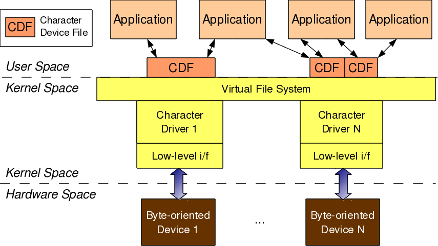

Device Drivers, Part 4: Linux Character Drivers
This article, which is part of the series on Linux device drivers, deals with the various concepts related to character drivers and their implementation.
Shweta, at her PC in her hostel room, was all set to explore the characters of Linux character drivers, before it was taught in class. She recalled the following lines from professor Gopi’s class: “… today’s first driver would be the template for any driver you write in Linux. Writing any specialised/advanced driver is just a matter of what gets filled into its constructor and destructor…”
With that, she took out the first driver’s code, and pulled out various reference books, to start writing a character driver on her own. She also downloaded the online book, Linux Device Drivers by Jonathan Corbet, Alessandro Rubini, and Greg Kroah-Hartman. Here is the summary of what she learnt.
W’s of character drivers
We already know what drivers are, and why we need them. What is so special about character drivers? If we write drivers for byte-oriented operations (or, in C lingo, character-oriented operations), then we refer to them as character drivers. Since the majority of devices are byte-oriented, the majority of device drivers are character device drivers.
Take, for example, serial drivers, audio drivers, video drivers, camera drivers, and basic I/O drivers. In fact, all device drivers that are neither storage nor network device drivers are some type of a character driver. Let’s look into the commonalities of these character drivers, and how Shweta wrote one of them.

The complete connection
As shown in Figure 1, for any user-space application to operate on a byte-oriented device (in hardware space), it should use the corresponding character device driver (in kernel space). Character driver usage is done through the corresponding character device file(s), linked to it through the virtual file system (VFS). What this means is that an application does the usual file operations on the character device file. Those operations are translated to the corresponding functions in the linked character device driver by the VFS. Those functions then do the final low-level access to the actual device to achieve the desired results.
Note that though the application does the usual file operations, their outcome may not be the usual ones. Rather, they would be as driven by the corresponding functions in the device driver. For example, a write followed by a read may not fetch what has just been written to the character device file, unlike for regular files. Remember that this is the usual expected behaviour for device files. Let’s take an audio device file as an example. What we write into it is the audio data we want to play back, say through a speaker. However, the read would get us audio data that we are recording, say through a microphone. The recorded data need not be the played-back data.
In this complete connection from application to the device, there are four major entities involved:
- Application
- Character device file
- Character device driver
- Character device
And the interesting thing is that, all of these can exist independently on a system, without the other being there. So, mere existence of these on a system doesn’t mean they are linked to form the complete connection. Rather, they need to be explicitly connected. Application gets connected to a device file by invoking open system call on the device file. Device file(s) are linked to the device driver by specific registrations by the driver. And the device driver is linked to a device by its device-specific low-level operations. Thus, forming the complete connection. With this, note that the character device file is not the actual device but just a placeholder for the actual device.
Major & minor number
Connection between the application and the device file is based on the name of the device file. However, the connection between the device file and the device driver is based on the number of the device file, not the name. This allows a user-space application to have any name for the device file, and enables the kernel-space to have trivial index-based linkage between the device file & the device driver. This device file number is more commonly referred as the <major, minor> pair, or the major & minor numbers of the device file. Earlier (till kernel 2.4), one major number was for one driver, and the minor number used to represent the sub-functionalities of the driver. With kernel 2.6, this distinction is no longer mandatory – there could be multiple drivers under same major number but obviously with different minor number ranges. However, this is more common with the non-reserved major numbers and standard major numbers are typically preserved for single drivers. For example, 4 for serial interfaces, 13 for mice, 14 for audio devices, …. The following command would list the various character device files on your system:
$ ls -l /dev/ | grep “^c”
<major, minor> related support in kernel 2.6
Type: (defined in kernel header <linux/types.h>)
dev_t // contains both major & minor numbers
Macros: (defined in kernel header <linux/kdev_t.h>)
MAJOR(dev_t dev) // extracts the major number from dev
MINOR(dev_t dev) // extracts the minor number from dev
MKDEV(int major, int minor) // creates the dev from major & minor
Connecting the device file with the device driver involves two steps:
- Registering for the
<major, minor>range of device files. - Linking the device file operations to the device driver functions.
First step is achieved using either of the following two APIs: (defined in kernel header <linux/fs.h>)
int register_chrdev_region(dev_t first, unsigned int cnt, char *name);
int alloc_chrdev_region(
dev_t *first, unsigned int firstminor, unsigned int cnt, char *name);
First API registers the cnt number of device file numbers starting from first, with the name. Second API dynamically figures out a free major number and registers the cnt number of device file numbers starting from <the free major, firstminor>, with the name. In either case, the /proc/devices kernel window lists the name with the registered major number. With this information, Shweta added the following into the first driver code.
#include <linux/types.h>
#include <linux/kdev_t.h>
#include <linux/fs.h>
static dev_t first; // Global variable for the first device number
In the constructor, she added:
int ret;
if ((ret = alloc_chrdev_region(&first, 0, 3, "Shweta")) < 0)
{
return ret;
}
printk(KERN_INFO "<Major, Minor>: <%d, %d>\n", MAJOR(first), MINOR(first));
In the destructor, she added:
unregister_chrdev_region(first, 3);
Putting it all together, it becomes:
#include <linux/module.h>
#include <linux/version.h>
#include <linux/kernel.h>
#include <linux/types.h>
#include <linux/kdev_t.h>
#include <linux/fs.h>
static dev_t first; // Global variable for the first device number
static int __init ofcd_init(void) /* Constructor */
{
int ret;
printk(KERN_INFO "Namaskar: ofcd registered");
if ((ret = alloc_chrdev_region(&first, 0, 3, "Shweta")) < 0)
{
return ret;
}
printk(KERN_INFO "<Major, Minor>: <%d, %d>\n", MAJOR(first), MINOR(first));
return 0;
}
static void __exit ofcd_exit(void) /* Destructor */
{
unregister_chrdev_region(first, 3);
printk(KERN_INFO "Alvida: ofcd unregistered");
}
module_init(ofcd_init);
module_exit(ofcd_exit);
MODULE_LICENSE("GPL");
MODULE_AUTHOR("Anil Kumar Pugalia <email@sarika-pugs.com>");
MODULE_DESCRIPTION("Our First Character Driver");
Then, Shweta repeated the usual steps, she learnt for the first driver
- Build the driver (.ko file) by typing
make - Load the driver using
insmod - List the loaded modules using
lsmod - Unload the driver using
rmmod
Summing up
Additionally, before unloading the driver, she peeped into the kernel window /proc/devices to look for the registered major number with the name “Shweta” using cat /proc/devices. It was right there. But she couldn’t find any device file created under /dev with the same major number. So, she created them by hand using mknod, and then tried reading & writing those. Figure 8 shows all these. Please note that the major number “250” may vary from system to system based on the availability. Figure 8 also shows the results, Shweta got from reading & writing one of the device files. That reminded her that the second step for connecting the device file with the device driver – “Linking the device file operations to the device driver functions” is not yet done. She realized that she needs to dig further information to complete this step and also to figure out the reason for the missing device files under /dev. We shall continue further in our next article, to figure out what more is Shweta learning and how is she going ahead with her first character driver.